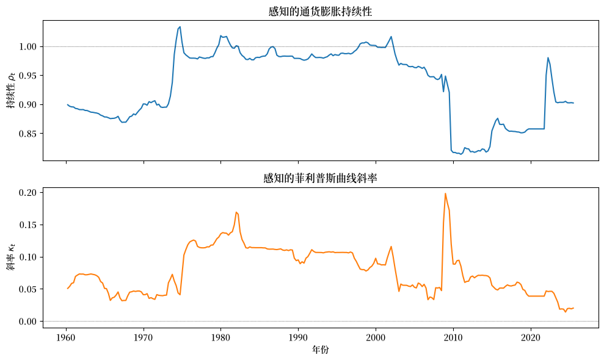
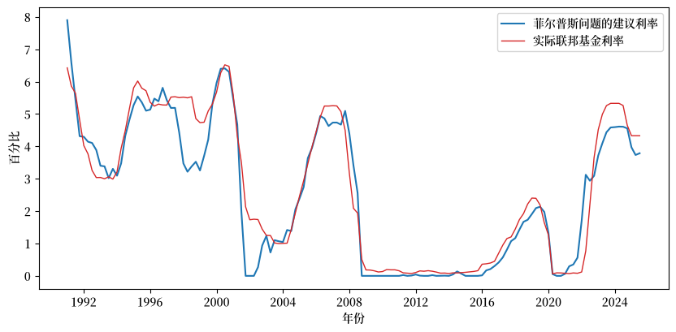
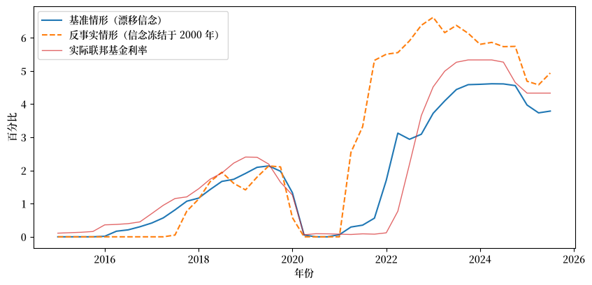
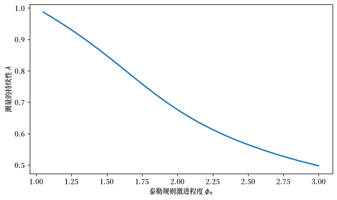
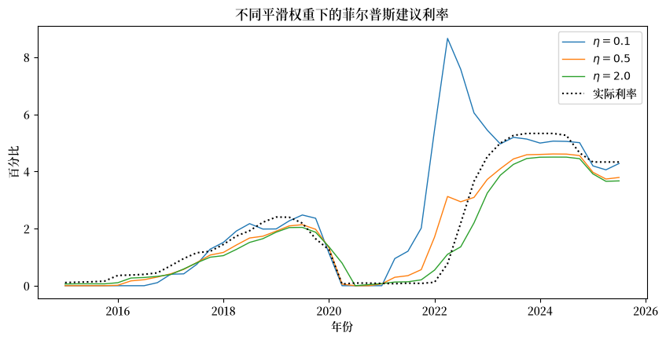

103. 失落的征服：2020 年代的美联储政策#
除了 Anaconda 中已有的库之外，本讲座还将使用以下库从 FRED 下载数据：
!pip install pandas_datareader
103.1. 概览#
本讲座是《菲利普斯曲线权衡》系列的当代续篇。
它遵循 [Sargent and Williams, 2025] 的思路，将 适应性学习与逃逸动态 和 先验、逃逸与学习循环 中的工具——菲尔普斯控制问题、一个预期效用政府、一个通过常增益递归最小二乘法估计的漂移系数模型，以及一个自我确认均衡——运用到 2020 年代的通货膨胀问题上。
这是一个仍在持续的谜题。
在 COVID-19 大流行之后，美国通货膨胀率飙升至上世纪 80 年代初以来的最高水平——这正是我们在 美国通货膨胀的兴衰 的 1999 年后数据中绘制的那段情节。
然而，联邦储备委员会（美联储）超过一年时间没有作出反应；直到 2022 年，在通货膨胀已接近峰值时，它才开始积极加息。
美联储为何反应如此迟缓？
[Sargent and Williams, 2025] 构建了一个人工美联储，它在每一期都会：
通过常增益递归最小二乘法重新估计一条漂移系数的菲利普斯曲线，并且
在预期效用假设下——按照 [Kreps, 1998] 的意义——求解一个线性二次型菲尔普斯问题，以设定其利率工具。
这是一种“模型预测控制”：与推动 适应性学习与逃逸动态 中学习型政府的先估计再优化循环相同，只是现在的工具变成了政策利率，而信念所涉及的是通货膨胀的持续性和菲利普斯曲线的斜率。
三个漂移的信念最终解释了这种缓慢的反应：
通货膨胀持续性下降——美联储已经了解到通货膨胀冲击消退得很快，因此这次飙升看起来是暂时性的。
更平坦的菲利普斯曲线——美联储已经了解到通货膨胀对经济松弛的反应很弱，因此抑制通货膨胀看起来代价高昂。
实时产出缺口的测量误差——美联储所感知到的经济松弛程度比实际情况更大。
我们从公开数据中重现前两个信念，展示它们如何生成一条能够追踪实际联邦基金利率的菲尔普斯规则，然后——遵循论文中的新凯恩斯主义附录——提出一个自我确认均衡的问题：美联储的良性信念是否是其自身过去成功的结果？
让我们导入所需的库：
import matplotlib.pyplot as plt
import matplotlib as mpl # i18n
FONTPATH = "fonts/SourceHanSerifSC-SemiBold.otf" # i18n
mpl.font_manager.fontManager.addfont(FONTPATH) # i18n
plt.rcParams['font.family'] = ['Source Han Serif SC'] # i18n
import numpy as np
import pandas as pd
import datetime
from pandas_datareader import data as web
from scipy.linalg import solve_discrete_are
103.2. 三个要素#
前两个要素是现代宏观经济学中记录最为详实的事实之一。
持续性下降。 从 20 世纪 70 年代到 80 年代，通货膨胀具有很强的持续性；一次冲击会使通货膨胀持续数年之久。
[Cogley and Sargent, 2005] 和 [Stock and Watson, 2007] 记录了 20 世纪 80 年代中期之后持续性的显著下降——通货膨胀开始更快地回归目标值。
更平坦的菲利普斯曲线。 自 20 世纪 90 年代以来，菲利普斯曲线斜率的估计值趋于零——大衰退之后的“消失的反通胀”便是最典型的例子。
这两个事实都曾出现在政策制定者的脑海中。
前美联储主席珍妮特·耶伦在 2019 年曾指出：“菲利普斯曲线的斜率……自 20 世纪 60 年代以来已显著下降……而且……通货膨胀的持续性已大大降低。”
正如 [Bernanke, 2022] 所写：“平坦的菲利普斯曲线意味着通货膨胀作为经济过热的指标可靠性降低了，将通货膨胀重新降至目标水平所需付出的失业代价，可能比过去更高。”
实时不确定性。 [Orphanides, 2001] 强调的第三个要素是，产出缺口在实时中会被严重误测，尤其是在商业周期的转折点。
在 2020 年至 2023 年间，实时缺口持续低于后来修订后的度量值，因此美联储感知到了更多的经济松弛——这强化了通货膨胀会自行消退的信念。
我们在下文使用当前版本的数据，并在结论部分回到实时数据的区别问题上。
103.3. 美联储的漂移系数信念#
我们赋予人工美联储一条具有漂移系数的前瞻性菲利普斯曲线：
其中 \(\pi_t\) 是通货膨胀率，\(x_t\) 是产出缺口，\(\rho_t\) 是感知的持续性，\(\kappa_t\) 是感知的斜率。
美联储通过常增益递归最小二乘法更新 \(\theta_t = (\alpha_{0,t}, \rho_t, \kappa_t)\)——这正是 适应性学习与逃逸动态 和 先验、逃逸与学习循环 中的算法，增益 \(\gamma\) 对过去的数据进行折扣，从而使估计值能够追踪漂移：
其中 \(X_t = (1, \pi_{t-1}, x_t)^\top\)。
我们从 FRED 下载季度个人消费支出（PCE）通货膨胀率、国会预算办公室（CBO）产出缺口和联邦基金利率。
start, end = datetime.datetime(1959, 1, 1), datetime.datetime(2025, 7, 1)
pcepi = web.DataReader('PCEPI', 'fred', start, end)['PCEPI'].resample('QS').mean()
gdp = web.DataReader('GDPC1', 'fred', start, end)['GDPC1'] # 实际 GDP
pot = web.DataReader('GDPPOT', 'fred', start, end)['GDPPOT'] # CBO 潜在产出
ff = web.DataReader('FEDFUNDS', 'fred', start, end)['FEDFUNDS'].resample('QS').mean()
inflation = 100 * (pcepi / pcepi.shift(4) - 1) # 同比 PCE 通货膨胀率
gap = 100 * (gdp / pot - 1) # 产出缺口，百分比
data = pd.concat([inflation.rename('pi'), gap.rename('x'),
ff.rename('i')], axis=1).dropna()
print(f"样本区间：{data.index[0].date()} 至 {data.index[-1].date()}，"
f"共 {len(data)} 个季度")
样本区间：1960-01-01 至 2025-07-01，共 263 个季度
遵循原论文的做法，我们在 2020-2021 年冻结信念（将增益设为零），因为疫情期间的观测值是极端异常值，否则会使估计值剧烈波动；信念更新在 2022 年恢复。
def estimate_beliefs(data, gain=0.03, freeze=(2020, 2021)):
"对漂移菲利普斯曲线进行常增益递归最小二乘估计；返回 α₀、ρ、κ 路径。"
pi, x = data['pi'].values, data['x'].values
θ = np.array([0.5, 0.9, 0.05]) # [截距，持续性，斜率]
R = np.diag([1.0, 10.0, 5.0])
rows = []
for t in range(1, len(data)):
g = 0.0 if data.index[t].year in freeze else gain
X = np.array([1.0, pi[t - 1], x[t]])
err = pi[t] - X @ θ
R = R + g * (np.outer(X, X) - R)
θ = θ + g * np.linalg.solve(R, X * err)
rows.append((θ[0], θ[1], θ[2]))
return pd.DataFrame(rows, index=data.index[1:],
columns=['alpha0', 'rho', 'kappa'])
beliefs = estimate_beliefs(data)
fig, axes = plt.subplots(2, 1, figsize=(10, 6), sharex=True)
axes[0].plot(beliefs['rho'])
axes[0].axhline(1, color='k', lw=0.5, ls=':')
axes[0].set_ylabel('持续性 $\\rho_t$')
axes[0].set_title('感知的通货膨胀持续性')
axes[1].plot(beliefs['kappa'], color='C1')
axes[1].axhline(0, color='k', lw=0.5, ls=':')
axes[1].set_ylabel('斜率 $\\kappa_t$')
axes[1].set_xlabel('年份')
axes[1].set_title('感知的菲利普斯曲线斜率')
plt.tight_layout()
plt.show()
findfont: Failed to find font weight normal, now using 600.
findfont: Failed to find font weight normal, now using 600.
findfont: Failed to find font weight normal, now using 600.

图 103.1 美联储感知的通货膨胀持续性和菲利普斯曲线斜率#
在通货膨胀高企的 20 世纪 70 年代和 80 年代，感知的持续性 \(\rho_t\) 接近 1，随后在 80 年代中期之后逐渐下降，在 2008 年之后触底——然后在 2022 年信念更新恢复时又跳回接近 1 的水平，恰好也是美联储放弃“暂时性”表述并开始收紧政策的时候。
感知的斜率 \(\kappa_t\) 在整个 2010 年代趋向于零：菲利普斯曲线趋于平坦。
到 2019 年，美联储的模型认为通货膨胀并非持续性的，且与经济松弛的联系较弱——这些信念在输入到菲尔普斯问题后，会得出建议保持耐心的结论。
103.4. 美联储的菲尔普斯问题#
美联储在每一期通过求解一个线性二次型菲尔普斯问题来设定其政策利率，将其当前的估计值视为将永远成立——这正是我们在 适应性学习与逃逸动态 中遇到的 [Kreps, 1998] 的预期效用假设。
将信念菲利普斯曲线 (103.1) 与一条固定的“IS 曲线” \(x_t = b_0 + b_1 x_{t-1} + g(i_{t-1} - \pi_{t-1}) + \varepsilon^x_t\) 相配对，可以得到状态 \(X_t = (1, \pi_t, x_t, i_{t-1})^\top\) 的线性动态：
其矩阵取决于第 \(t\) 期的信念。
美联储最小化以下目标：
其中 \(\pi^*\) 是 2% 的目标值，最后一项对利率的突然变化施加惩罚。
这是一个带有交叉项的贴现线性二次型调节器问题；其解为一条平滑化的泰勒规则 \(i_t = -F_t X_t\)，其系数会随着信念的变化而变化。
# 固定 IS 曲线，通过对全样本进行一次性 OLS 估计得到
pi, x, i_ = data['pi'].values, data['x'].values, data['i'].values
n = len(data)
X_is = np.column_stack([np.ones(n - 1), x[:-1], i_[:-1] - pi[:-1]])
b0, b1, g = np.linalg.lstsq(X_is, x[1:], rcond=None)[0]
β, π_star, λ_x, η = 0.95, 2.0, 0.2, 0.5
def phelps_rate(θ, state, η=η):
"在给定信念 θ=(α₀,ρ,κ) 和状态的情况下计算（主观上）最优的联邦基金利率。"
α0, ρ, κ = θ
A = np.array([[1, 0, 0, 0],
[α0 + κ * b0, ρ - κ * g, κ * b1, 0],
[b0, -g, b1, 0],
[0, 0, 0, 0]], float)
B = np.array([[0], [κ * g], [g], [1]], float)
c_π = np.array([-π_star, 1, 0, 0.]) # π − π*
c_x = np.array([0, 0, 1, 0.]) # x
e_i = np.array([0, 0, 0, 1.]) # i_{-1}
Q = np.outer(c_π, c_π) + λ_x * np.outer(c_x, c_x) + η * np.outer(e_i, e_i)
N = (-η * e_i).reshape(4, 1)
R = np.array([[η]])
sb = np.sqrt(β)
P = solve_discrete_are(sb * A, sb * B, Q, R, s=sb * N)
F = np.linalg.solve(R + β * B.T @ P @ B, β * B.T @ P @ A + N.T)
return max((-F @ state).item(), 0.0) # 施加零利率下限
θ = np.array([0.5, 0.9, 0.05])
R = np.diag([1.0, 10.0, 5.0])
gain = 0.03
opt, θ_2000 = [], None
for t in range(1, n):
yr = data.index[t].year
g_t = 0.0 if yr in (2020, 2021) else gain
X = np.array([1.0, pi[t - 1], x[t]])
R = R + g_t * (np.outer(X, X) - R)
θ = θ + g_t * np.linalg.solve(R, X * (pi[t] - X @ θ))
if data.index[t].year == 2000 and θ_2000 is None:
θ_2000 = θ.copy() # 保存用于反事实分析的信念
state = np.array([1.0, pi[t], x[t], i_[t - 1]])
opt.append(phelps_rate(θ, state))
optimal = pd.Series(opt, index=data.index[1:])
fig, ax = plt.subplots(figsize=(10, 4.5))
window = slice('1991', None)
ax.plot(optimal[window], 'C0', label="菲尔普斯问题的建议利率")
ax.plot(data['i'][window], 'C3', lw=1, label='实际联邦基金利率')
ax.set_xlabel('年份')
ax.set_ylabel('百分比')
ax.legend()
plt.show()
corr = np.corrcoef(optimal['1991':], data['i']['1991':optimal.index[-1]])[0, 1]
print(f"1991-2025 年建议利率与实际利率的相关性：{corr:.2f}")

图 103.2 信念驱动的菲尔普斯规则与实际联邦基金利率对比#
1991-2025 年建议利率与实际利率的相关性：0.95
在长达三十年的时间跨度里，主观最优利率追踪了实际政策的水平和转折点（相关性约为 0.95）：20 世纪 90 年代末的紧缩、2001 年的宽松、2008 年之后的零利率时代，以及 2015 年的政策正常化。
关键的是，在 2021 年通货膨胀飙升期间，建议利率几乎没有变动——信念驱动的规则同样建议缓慢作出反应，仅在 2022 年才开始收紧，与美联储的实际行为如出一辙。
103.5. 美联储为何反应缓慢：一个反事实分析#
为了分离出漂移信念所起的作用，我们重新计算菲尔普斯建议利率，这次将信念固定在 2000 年 1 月的取值上——当时人们仍然认为通货膨胀具有持续性，且菲利普斯曲线更陡峭。
counterfactual = pd.Series(
[phelps_rate(θ_2000, np.array([1.0, pi[t], x[t], i_[t - 1]]))
for t in range(1, n)],
index=data.index[1:])
fig, ax = plt.subplots(figsize=(10, 4.5))
w = slice('2015', None)
ax.plot(optimal[w], 'C0', label='基准情形（漂移信念）')
ax.plot(counterfactual[w], 'C1--', label='反事实情形（信念冻结于 2000 年）')
ax.plot(data['i'][w], 'C3', lw=1, alpha=0.7, label='实际联邦基金利率')
ax.set_xlabel('年份')
ax.set_ylabel('百分比')
ax.legend()
plt.show()

图 103.3 反事实分析：一个自 2000 年以来未曾更新信念的美联储#
一个持有 2000 年信念的美联储——认为通货膨胀具有持续性且菲利普斯曲线更陡峭——本应在 2021 年立即而剧烈地收紧政策，在实际美联储尚未采取任何行动之前，就将联邦基金利率推高至远超 4% 的水平。
这种温和而滞后的反应，并非目标的改变，而是信念的改变。
由于将通货膨胀视为暂时性，将菲利普斯曲线视为平坦，美联储自身的菲尔普斯问题告诉它应当耐心等待。
103.6. 一个自我确认均衡：自然界的新凯恩斯主义模型#
这些良性信念是正确的吗？
在这里，原论文加入了一个转折，它直接与 自我确认均衡 和 逃离纳什通胀 相联系：一个自我确认均衡，其中美联储关于菲利普斯曲线平坦、持续性低的信念，是其自身过去激进政策的结果。
假设自然实际上运行着一个小型的新凯恩斯主义模型：
其结构斜率为 \(\kappa\)，泰勒规则的激进程度为 \(\phi_\pi\)。
在其最小状态变量理性预期均衡中，\(\mathbb E_t \pi_{t+1} = \lambda\, \pi_t\)，其中 \(\lambda\)——即计量经济学家能够恢复的测量持续性——是取决于 \(\phi_\pi\) 的一个三次方程的稳定根。
原论文证明了两个比较静态结果。
命题 103.1 (激进的政策降低了测量的持续性)
在确定性区域内，稳定根 \(\lambda(\phi_\pi)\) 严格随着政策激进程度 \(\phi_\pi\) 的增加而下降：更加激进的美联储会使通货膨胀看起来不那么持续。
命题 103.2 (激进的政策使测量的斜率变得平坦)
在满足一定条件下（滞后通货膨胀项较小，且规则足够激进），前瞻性菲利普斯曲线的总体 OLS 斜率也会随着 \(\phi_\pi\) 的增加而下降：更加激进的美联储会使菲利普斯曲线看起来更加平坦。
让我们通过求解三次方程的稳定根来重现 命题 103.1。
def measured_persistence(φ_π, β=0.99, γ_b=0.5, κ=0.1, σ=1.0):
"稳定的最小状态变量根 λ(φ_π)：计量经济学家将测得的持续性。"
coeffs = [β, -(1 + β + κ * σ), 1 + γ_b + κ * σ * φ_π, -γ_b]
roots = np.roots(coeffs)
real = roots[np.abs(roots.imag) < 1e-9].real
stable = real[np.abs(real) < 1.0]
return stable[np.argmin(np.abs(stable))]
φ_grid = np.linspace(1.05, 3.0, 40)
λ_path = [measured_persistence(φ) for φ in φ_grid]
fig, ax = plt.subplots(figsize=(8, 4.5))
ax.plot(φ_grid, λ_path, lw=2)
ax.set_xlabel(r'泰勒规则激进程度 $\phi_\pi$')
ax.set_ylabel(r'测量的持续性 $\lambda$')
plt.show()

图 103.4 激进的政策使通货膨胀看起来持续性更低#
随着政策变得愈发激进，测量的持续性从接近 1 下降到大约二分之一。
这两个命题背后的直觉是政策的内生性，这一点被 [McLeay and Tenreyro, 2019] 所强调：当美联储及时抵消通货膨胀压力时，一个将产出缺口视为外生驱动因素的回归分析，所恢复出的斜率会更小，通货膨胀过程的均值回归速度也会比结构参数所暗示的更快。
103.6.1. 陷阱#
现在，将 (103.3) 视为自然界的真实模型，将前几节的漂移系数模型视为美联储的近似模型。
在一条持续激进的政策路径上——沃尔克-格林斯潘式的征服——美联储所产生的数据会使通货膨胀看起来是暂时性的，菲利普斯曲线看起来是平坦的。
在估计其前瞻性模型时，美联储便真的相信了这一点。
这些信念在 自我确认均衡 意义上构成了一个自我确认均衡：在美联储当前的激进政策下，其简化形式模型与自然界的新凯恩斯主义模型在观测上是等价的。
但这些信念在均衡路径之外是错误的——在不那么激进的政策下，持续性和斜率会重新回升。
美联储无法看到这一点，因为它没有理由去进行试验：它陷入了 适应性学习与逃逸动态 中所描述的缺乏试验的陷阱，其自满情绪由一个关于它从未执行过的政策的信念所支撑。
当疫情后的巨大冲击最终来袭时，这些自我确认的信念告诉美联储，这次飙升是暂时性的，收紧政策代价高昂——于是，这场征服在一段时间内失落了。
这是《征服》一书中反复出现的动态在更高层次上的一次现代重演：这一机制现在通过菲利普斯曲线感知的斜率和持续性，以及政策利率工具发挥作用，而误设并非关于预期，而是关于美联储将简化形式菲利普斯曲线视为结构性的这一政策内生性问题——正如 美国通货膨胀的兴衰 中所描述的“平反”故事那样，忽视了卢卡斯批判。
备注
正如 [Sargent and Williams, 2025] 所指出的，漂移系数模型纯粹是一个描述性的“开普勒阶段”模型， 而非结构性的“牛顿阶段”模型。
原论文也承认了另一种解读方式，即 2020 年代的宽松政策起源于财政因素——参见其所引用的财政理论 论述——这是对同一政策路径的一种截然不同的解释。
本讲将漂移的信念归结于美联储，然后追问这些信念会推荐怎样的政策。
本系列的收尾讲座 漂移与波动率 则从相反的方向审视同一时期：它追问数据，经济的简化形式究竟是否真的发生了漂移，以及那些看似信念漂移的现象，究竟有多少实际上是冲击方差在漂移。
103.7. 练习#
练习 103.1
在损失函数 (103.2) 中的利率平滑权重 \(\eta\)，用原论文的话来说，是“最重要的参数之一”。
请针对 \(\eta \in \{0.1, 0.5, 2.0\}\) 重新计算基准菲尔普斯建议利率，并将其与 2015-2025 年间的实际联邦基金利率进行对比绘图。
更大的平滑惩罚如何改变建议政策的特征？
解答 练习 103.1
def recommend(η_val):
"在给定平滑权重下，沿整个样本计算菲尔普斯建议利率。"
θ, R = np.array([0.5, 0.9, 0.05]), np.diag([1.0, 10.0, 5.0])
out = []
for t in range(1, n):
g_t = 0.0 if data.index[t].year in (2020, 2021) else gain
X = np.array([1.0, pi[t - 1], x[t]])
R = R + g_t * (np.outer(X, X) - R)
θ = θ + g_t * np.linalg.solve(R, X * (pi[t] - X @ θ))
out.append(phelps_rate(θ, np.array([1.0, pi[t], x[t], i_[t - 1]]),
η=η_val))
return pd.Series(out, index=data.index[1:])
fig, ax = plt.subplots(figsize=(10, 4.5))
w = slice('2015', None)
for η_val in [0.1, 0.5, 2.0]:
ax.plot(recommend(η_val)[w], lw=1, label=rf'$\eta = {η_val}$')
ax.plot(data['i'][w], 'k:', lw=1.5, label='实际利率')
ax.set_xlabel('年份')
ax.set_ylabel('百分比')
ax.set_title('不同平滑权重下的菲尔普斯建议利率')
ax.legend()
plt.show()

较小的 \(\eta\) 会产生随着通货膨胀和产出缺口剧烈波动的利率；较大的 \(\eta\) 会使建议利率紧贴滞后利率，从而更好地拟合观测到的平滑路径，但代价是可解释性降低。
中间取值取得了一种平衡——足够的平滑性使其类似于真实的美联储行为，但仍能识别出对经济状态的合理反应。
练习 103.2
命题 103.1 指出，激进的泰勒规则会降低通货膨胀测量的持续性。
通过结合本讲座的两个部分，追踪这一结论对美联储自身政策的影响：对于结构性激进程度 \(\phi_\pi\) 的一个网格，计算测量的持续性 \(\lambda(\phi_\pi)\)，然后将具有该持续性的信念（保持斜率和截距不变）输入到某个代表性状态下的 phelps_rate 中，并报告所隐含的通货膨胀反应。
一个历史上更加激进的美联储，最终是否会更不愿意对新的通货膨胀冲击作出反应？
解答 练习 103.2
state = np.array([1.0, 4.0, 1.0, 2.0]) # π=4，x=1，i_{-1}=2：一次通货膨胀冲击
print(f"{'φ_π（历史）':>14} {'测量的 ρ':>12} {'建议利率 i':>15}")
for φ in [1.2, 1.6, 2.0, 2.6]:
ρ_meas = measured_persistence(φ)
i_rec = phelps_rate(np.array([0.3, ρ_meas, 0.05]), state)
print(f"{φ:>14} {ρ_meas:>12.2f} {i_rec:>15.2f}")
φ_π（历史） 测量的 ρ 建议利率 i
1.2 0.95 3.38
1.6 0.81 1.85
2.0 0.68 1.70
2.6 0.55 1.67
历史上更加激进的政策（更高的 \(\phi_\pi\)）会使美联储相信通货膨胀持续性更低（测量的 \(\rho\) 更低），而根据 命题 103.1 的逻辑，再结合菲尔普斯问题的比较静态分析，一个认为通货膨胀会自行消退的美联储，对新的冲击的反应会更弱。
成功滋生自满：正是那种征服了通货膨胀的激进态度，教会了美联储一个教训，而如果将这一教训视为结构性的，反而会使其在应对下一次飙升时缺乏防备。